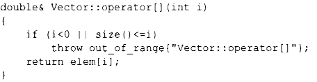
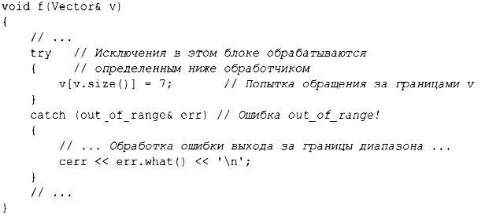
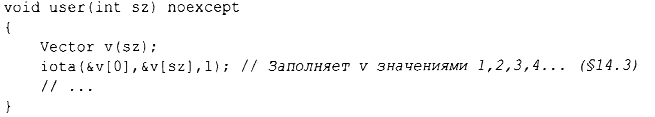

⇐3.5 Обработка ошибок 3.5.2 Инварианты⇒
Вновь рассмотрим наш пример с использованием Vector. Что должно быть сделано, если мы пытаемся получить доступ к элементу, который находится вне диапазона вектора из §2.3?
В предположении, что обращение за пределами диапазона является ошибкой, после которой мы хотим восстановить работу нашего приложения, создатель Vector может принять следующее решение: он обнаруживает попытку обращения к элементу вне доступного диапазона и сообщает об этом пользователю. Затем пользователь может предпринять необходимые действия по обработке ошибки и восстановлению. Например, Vector: : opera tor[]() может обнаружить попытку такого обращения и сгенерировать исключение out of range:
Инструкция throw передает управление обработчику исключений типа ou t_оf_range в некоторой функции, которая непосредственно или опосредованно вызывает Vector::operator[] (). Для этого реализация сворачивает стек вызовов функций так, чтобы вернуться в контекст этой вызывающей функции (т.е. механизм обработки исключений выходит из областей видимости и функций, чтобы вернуться в вызывающую функцию, которая выразила заинтересованность в обработке исключения данного вида, вызывая при этом все необходимые деструкторы (§4.2.2). Например:
Мы помещаем код, в обработке исключений в котором мы заинтересованы, в блок try. Попытка присваивания v [v.size ()] приводит к обращению за границами массива, поэтому управление будет передано в предоставленный блок catch с обработчиком исключений типа out_of_range. Тип out_of_range определен в стандартной библиотеке (в заголовочном файле <stdexcept>) и используется рядом функций обращения к контейнерам стандартной библиотеки.
Исключение перехватывается по ссылке, чтобы избежать копирования, и в нем используется функция what() для вывода сообщения об ошибке.
Использование механизмов обработки исключений может сделать обработку ошибок более простой, более систематической и более удобочитаемой. Чтобы достичь этого, не злоупотребляйте конструкциями try. Основной метод сделать обработку ошибок простой и систематической называется захват ресурса является иницишrизацией (Resource Acquisition Is Initialization - RAII) и объясняется в §4.2.2. Основная идея RAII заключается в том, чтобы все ресурсы, необходимые для работы класса, получал конструктор, а деструктор освобождал все захваченные ресурсы, тем самым гарантируя (неявное) освобождение ресурсов.
Функция, которая никогда не должна генерировать исключения, может быть объявлена как noexcept. Например:
Если все благие намерения остались лишь намерениями и функция user() по-прежнему генерирует исключение, вызывается функция std::terminate(), которая немедленно прекращает выполнение программы.